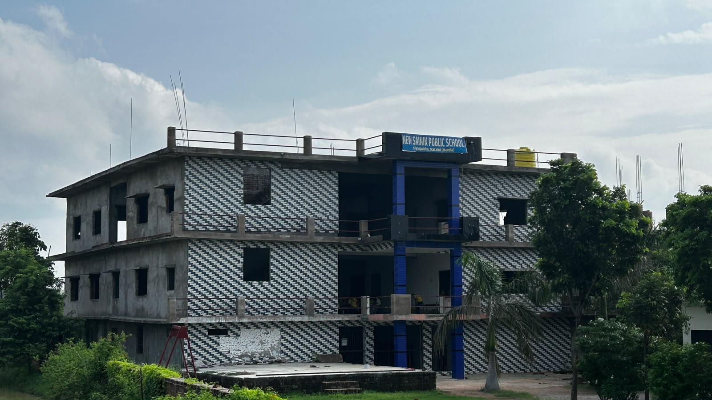
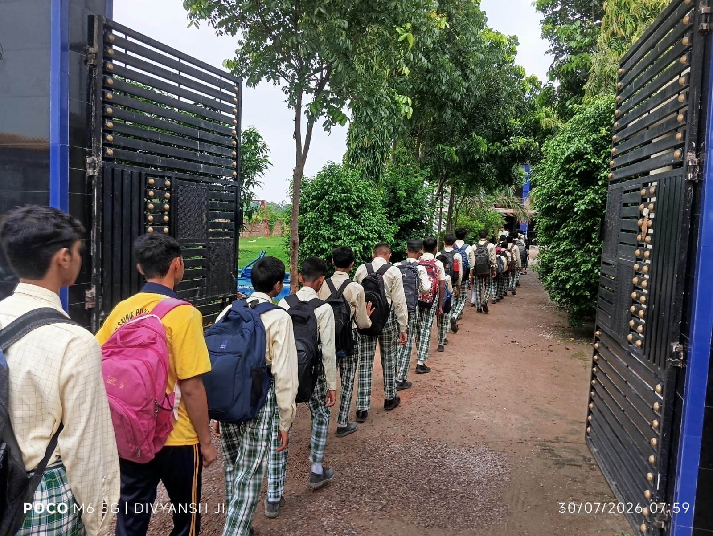
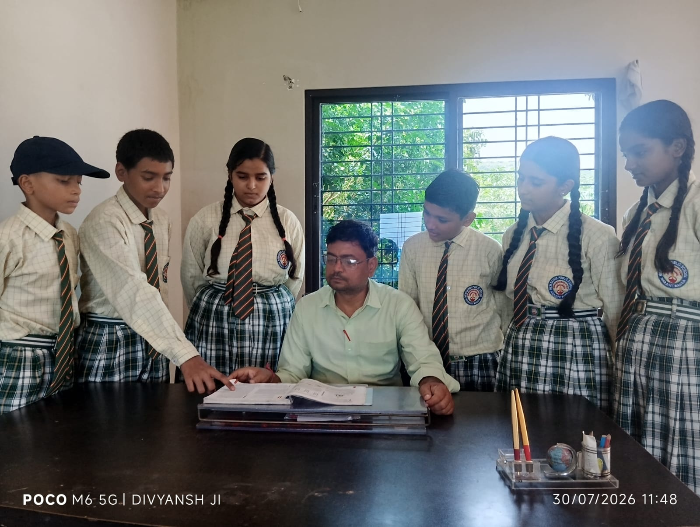
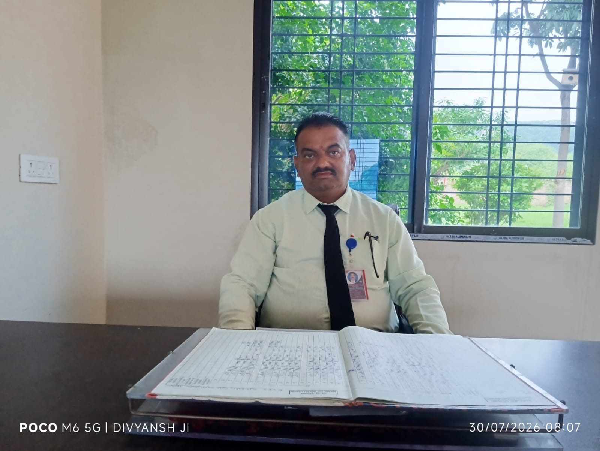
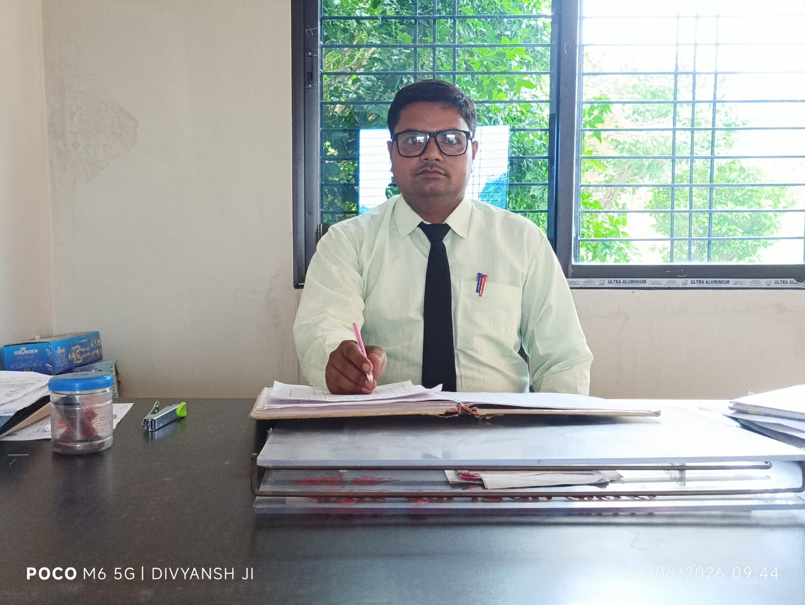

Our History

Founded with the vision to provide quality education in Banda, New Sainik Public School has grown from a modest beginning to a premier institution. We blend traditional values with modern educational methodologies to prepare our students for global challenges.
Our commitment to holistic education ensures that every child who walks through our gates is nurtured intellectually, emotionally, and physically.
Vision & Mission
Our Vision
Driven by our core values of Vision, Excellence, and Discovery (VED), we aim to be an institution that empowers students to become patriotic, responsible, and visionary leaders of tomorrow.
Our Mission
To provide a stimulating learning environment that fosters critical thinking, intellectual discovery, holistic development, and strong moral values, enabling students to realize their full potential and build resilience.
Academics & Holidays
At New Sainik Public School, we ensure a well-structured academic year. Below is the list of holidays for the academic session 2026-27.
Student Life & Discipline

Our students embody discipline and order, ensuring a safe and respectful environment as they move through our campus.

We believe in interactive and collaborative learning. Our faculty engage closely with students to nurture curiosity and academic excellence.
Directors' Message

Pradeep Kumar Pathak & Maya Pathak
Directors
"A living sanctuary for building character and enriching minds."
Dear Parents, welcome to New Sainik Public School—a space where potential meets opportunity. An educational institute is not merely defined by its bricks, mortar, and concrete; it is a living sanctuary for building character, enriching minds, and providing experiences that last a lifetime.
Our mission remains steadfast: to provide a vibrant and conducive environment for continuous learning. We are sincerely committed to nurturing an emerging generation that possesses a global perspective and a heart for service.
To our students: I challenge you to look beyond the curriculum. Seek excellence not just in your academic grades, but in your human virtues—creativity, brotherhood, patriotism, and discipline. Your journey at our school is the foundation of your future. Let us work together to ensure that every day spent within these walls is a step toward becoming a positive contributor to the world.
From the Principal's Desk

C.S Garg
Principal
"Nurturing Vision, Excellence, and Discovery in every child."
Welcome to New Sainik Public School. Our mission is deeply rooted in our core philosophy: VED (Vision, Excellence, Discovery). We believe that true education goes beyond textbooks; it is about building character, instilling patriotism, and fostering discipline.
Our dedicated faculty works tirelessly to ensure that our curriculum is engaging and relevant. We provide a holistic environment where every student is encouraged to explore their potential, build resilience, and develop the critical thinking skills needed for the future.
I invite you to explore our campus and discover the myriad opportunities that await your child at our school.
Coordinator

R.N Kushwaha
Coordinator
"Guiding our students toward a path of discipline and academic brilliance."
As the Coordinator of New Sainik Public School, I am dedicated to ensuring the smooth operation of our academic and co-curricular programs. My focus is on creating a supportive framework that empowers both our students and faculty to excel.
By fostering a collaborative environment, we ensure that every student's individual needs are met, aligning perfectly with our core values of Vision, Excellence, and Discovery.